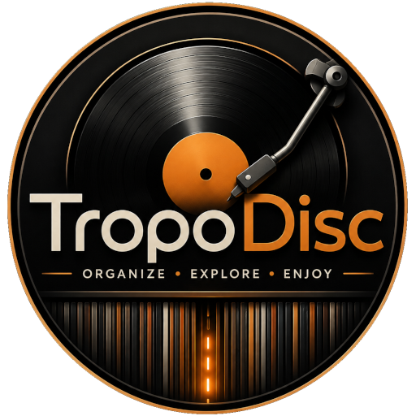

Recherche & Tri Instantané
Filtrez et triez votre collection en temps réel par artiste, année, date d'ajout, note ou emplacement physique sur votre étagère.
TropoDisc est un gestionnaire de collection musicale universel sous licence libre. Synchronisez vos albums (Discogs), personnalisez vos métadonnées et localisez instantanément vos disques sur votre étagère grâce à des rubans LED connectés.
TropoDisc est 100% indépendant de tout fournisseur unique. Grâce à son architecture par plugins, connectez Discogs ou votre propre source de données en toute sécurité.

Ne perdez plus de temps à chercher un vinyle ou un CD au milieu de centaines de références.
Filtrez et triez votre collection en temps réel par artiste, année, date d'ajout, note ou emplacement physique sur votre étagère.
Enrichissez vos fiches d'albums avec des champs sur-mesure : emplacement, prix d'achat, et vos propres styles taggués.
Reliez TropoDisc à des bandeaux LED pilotés par ESP32. Sélectionnez un album à l'écran : son emplacement exact s'illumine sur votre étagère !
Architecture sécurisée par proxy (Apache/Nginx Docker). Vos jetons secrets d'API ne sont jamais exposés côté navigateur.
Découpé en packages réutilisables.
Grille virtuelle dynamique optimisée pour les grandes collections comprenant des milliers de disques.
En configurant vos numéros d'emplacements dans votre collection, TropoDisc envoie des requêtes légères vers votre serveur de bandes LED.
Simulateur d'allumage des LED à l'emplacement sélectionné
Construit avec les standards du Web moderne (NPM Workspaces, Vite, Vitest).
Application principale: gestionnnaire de collection musicale.
Gestion d'état globale Zustand, normalisation et utilitaires.
Composants d'interface génériques et réutilisables.
Client HTTP autonome pour l'interaction avec les rubans LED.
Plugin d'intégration de l'API Discogs et de ses champs personnalisés.
Installez TropoDisc localement ou déployez-le sur votre serveur via Docker ou Apache.